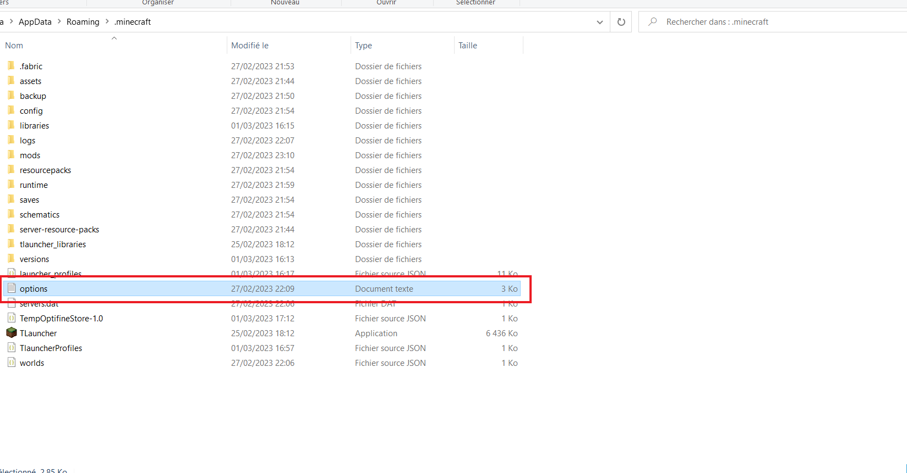
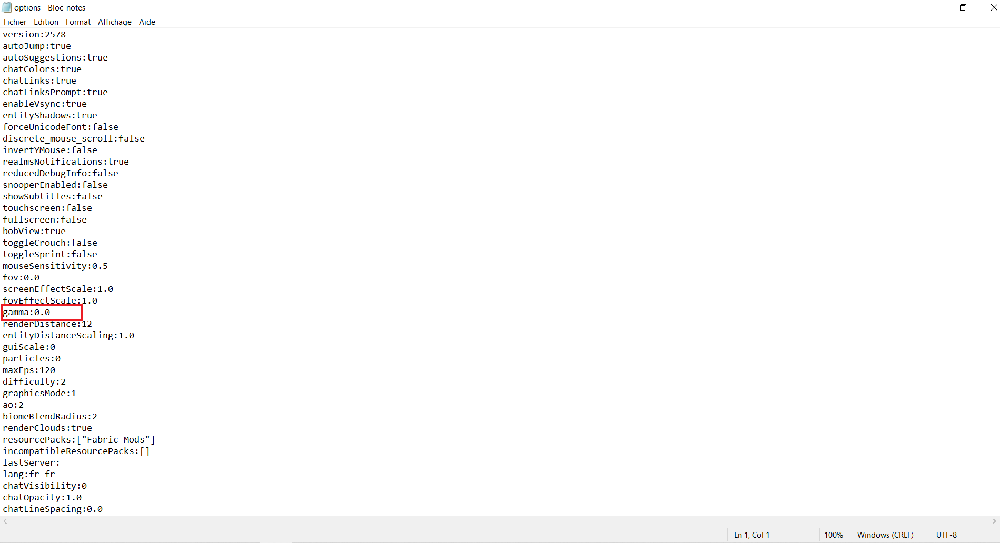

Comment monter son gamma sur minecraft
Minecraft voir la nuit et dans les grotes
Etape 1
Presser Windows+R
et l executeur windows va s ouvrir, vous devrez y écrire %appdata% et valider


Etape 2
Maintenant ouvrez le dossier .minecraft

et ouvrez le document texte options
Etape 3
Il faut trouvez la ligne avec inscrit gamma
Il vous reste plus qu a changer le 0.0 par 9999
Etape 4
Attention a bien sauvegarder le ficher avec ctrl+S
ou par Ficher>Sauvegarder